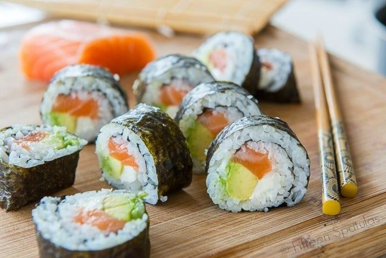

Sushi recipe

Homemade Sushi is so much cheaper than at the restaurant. Plus, it’s easy and fun to make your own rolls at home, so you can put all your favorite ingredients into your perfect custom roll — here’s how!
Ingredients:
- 6 sheets sushi seaweed
- 1 batch prepared sushi rice
- 1/2 lb sashimi-grade raw salmon
- 4 oz cream cheese
- 1 avocado
- soy sauce
Steps:
- Place the seaweed on a bamboo mat, then cover the seet of seaweed with an even layer of prepared sushi rice. Smoot gently wit a rice paddle.
- Layer salmon, crea, cheese, and avocado on the rice, and roll it up tightly. Slice with a sharp knife, and enjoy right away with soy sauce.
Go back